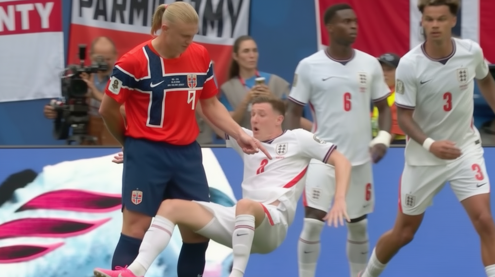

Die Sekunde davor

Es gibt eine Uhr im Fußball, die nur die FIFA lesen kann. Sie läuft rückwärts, sie läuft unregelmäßig, und sie hält genau dort an, wo es passt.
Miami, Viertelfinale, 45. Minute plus zwei. Norwegens Torhüter Örjan Nyland schlägt ab. Der Ball steigt, berührt dabei offenbar das Stahlseil einer Spider-Cam, kommt anders herunter, als er hinaufgeflogen ist. Sekunden später schiebt Jude Bellingham ihn zum 1:1 ins Netz. Die Norweger protestieren. Der französische Schiedsrichter Clement Turpin sieht sich nichts an. Kein Monitor, kein Review, keine Unterbrechung.
Was stattdessen kommt, ist bemerkenswert: eine Erklärung der FIFA, abgegeben während das Spiel noch läuft. Der Sensor im Ball habe keinen „Herzschlag“ gezeigt, „es gibt daher keinen Beweis, dass der Ball das Kabel berührt und die Bewegung des Balls verändert hat“. Der Weltverband stellt die Wirklichkeit seines eigenen Spiels per Mitteilung an das eigene Publikum fest. Der Mann mit der Pfeife wird gar nicht erst gefragt.
Zehn Minuten nach der Pause die Gegenprobe. Norwegen drückt den Ball nach einer Ecke über die Linie, Torbjörn Heggem, 55. Minute, 2:1. Jetzt geht Turpin an den Bildschirm. Und was er sich ansieht, ist nicht das Tor, nicht der letzte Zweikampf, nicht die Entstehung. Er sieht sich ein Gerangel an, das stattfand, bevor die Ecke überhaupt geschossen wurde. Bevor der Ball im Spiel war. Erling Haaland hat Elliot Anderson umgestoßen. Tor annulliert, Ecke wiederholt.
Geschoben haben beide. Vor jeder Ecke in jedem Stadion der Welt schieben sich Männer. Wer zuerst schob, ist eine Frage der Zeitlupe und des Wohlwollens. Wer umfiel, ist eine Frage der Statur. Abgepfiffen wurde der Größere, der Kleinere bekam einen neuen Eckball geschenkt.
Der Videobeweis ist der einzige Zeuge, der Vorfälle von vor dem Anpfiff erinnert — und die Sekunde davor vergisst.
Dabei hängt alles an einer einzigen Bedingung. Das Regelwerk der IFAB erlaubt dem Videoassistenten einen Eingriff ausschließlich bei einem „clear and obvious error“, einem klaren und offensichtlichen Fehler. Nicht bei Auslegungsfragen. Nicht bei Gerangel. Bei Fehlern, die jeder sieht.
Wie das in der Praxis aussieht, hat der deutsche Zuschauer am 30. Juni gelernt. Sechzehntelfinale bei Boston, Verlängerung, 102. Minute: Jonathan Tah trifft. Der marokkanische Schiedsrichter Jalal Jayed wird von der Video-Assistentin Tatiana Guzman an den Monitor gerufen und nimmt das Tor zurück. Deutschland scheidet im Elfmeterschießen aus. Lutz Wagner, Schiedsrichter-Experte im deutschen Fernsehen, sagt zu der Szene: „Der Torwart hat im Fünfmeterraum keine Sonderrechte.“ Und: „Ein klares Vergehen sehe ich nicht.“
Ein klares Vergehen sehe ich nicht. Das ist exakt die Schwelle, unterhalb derer der Videoassistent nichts zu suchen hat. Er kam trotzdem.
Folgen hat das keine, und das ist kein Zufall, sondern Text. Unter der Überschrift „Match validity“ schreibt die IFAB selbst, dass ein Spiel grundsätzlich nicht ungültig wird durch technische Fehlfunktionen des Videobeweises, durch falsche Entscheidungen des Videobeweises, durch die Entscheidung, einen Vorfall nicht zu überprüfen, oder durch die Überprüfung einer nicht überprüfbaren Situation. Vier Wege, es falsch zu machen. Null Konsequenzen. Man muss dieses Regelwerk nicht auslegen, man muss es nur lesen.
Wer wissen will, wie in diesem Verband Entscheidungen zustande kommen, muss nicht spekulieren. Am 27. Mai 2015 entsiegelte ein Bundesgericht in Brooklyn eine Anklageschrift mit 47 Punkten gegen 14 Beschuldigte. Das US-Justizministerium sprach von einem 24 Jahre laufenden System und von weit über 150 Millionen Dollar an Bestechungs- und Schmiergeldern. Sieben Funktionäre wurden am selben Morgen in einem Zürcher Hotel festgenommen. Zu den Vorgängen, um die es ging, gehörten die Vergabe einer Weltmeisterschaft und die Wahl eines FIFA-Präsidenten. Der frühere CONCACAF-Generalsekretär Chuck Blazer hatte da bereits gestanden.
Dieselbe Organisation verkauft heute den Rasen des Finales vom 19. Juli. In Acryl gegossen, mit Echtheitszertifikat, rund 390 Euro das Stück, Sonderausgaben bis 2.500. Versand nach dem Abpfiff.
Das Ergebnis steht noch nicht fest. Der Preis schon.